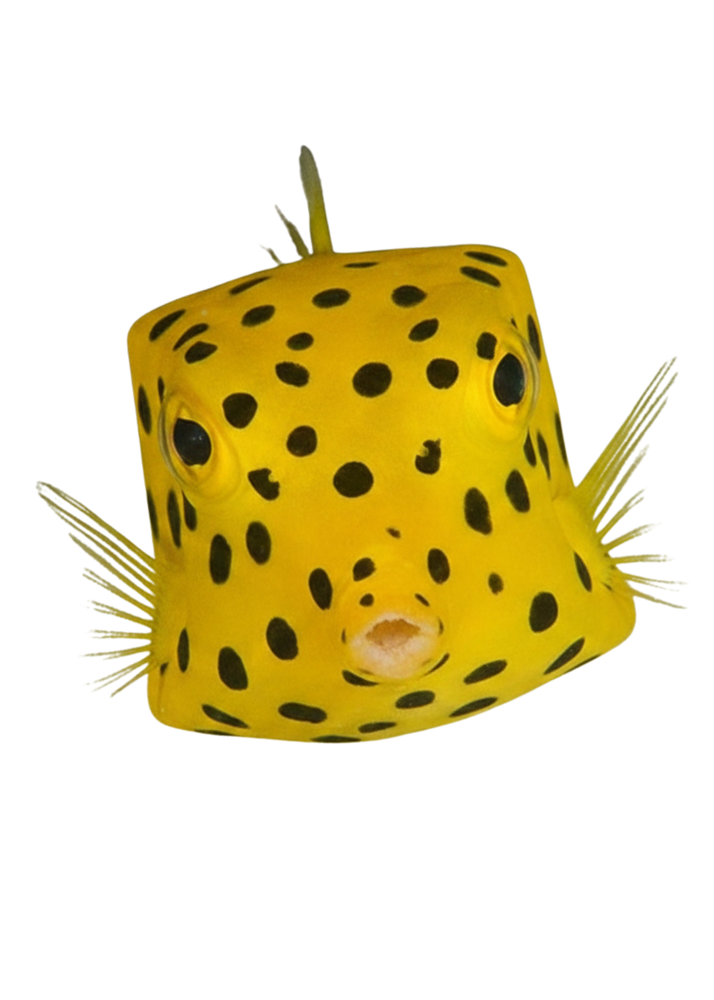
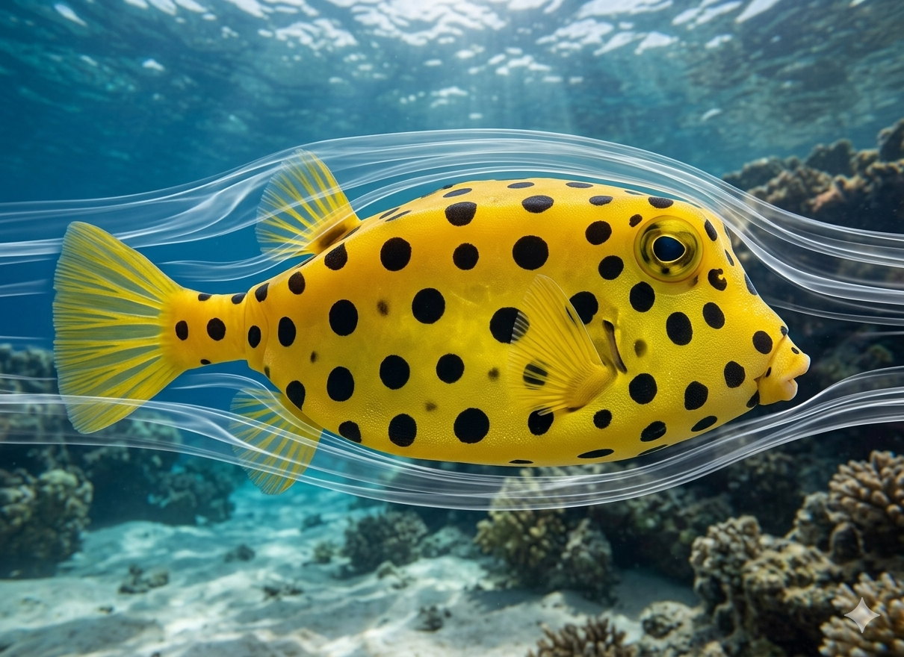
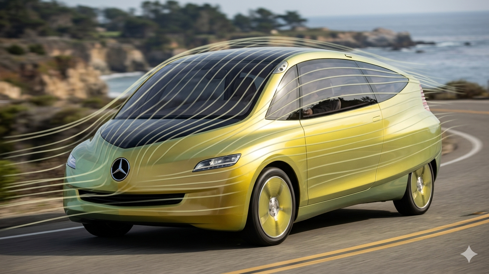
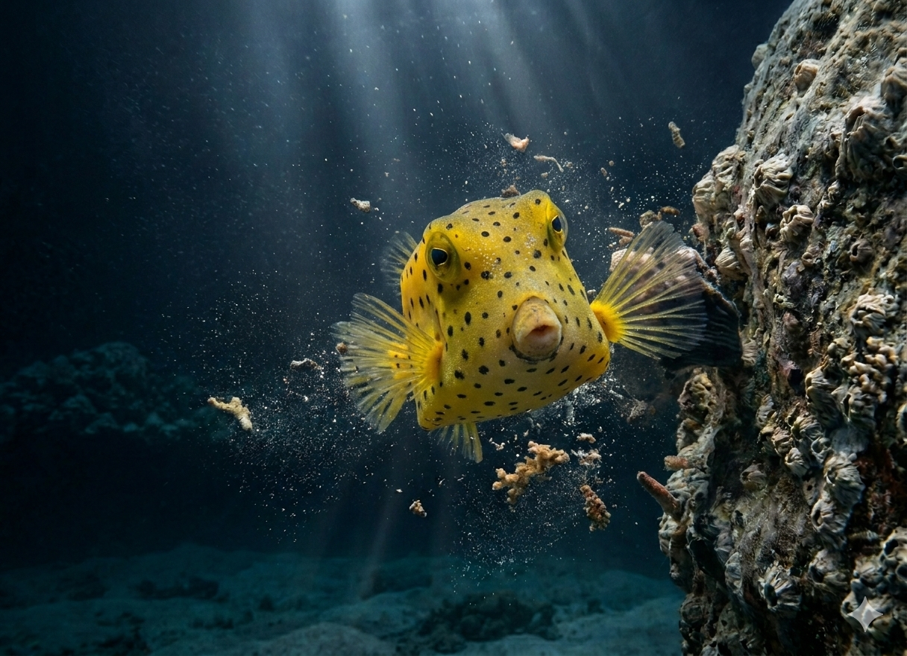
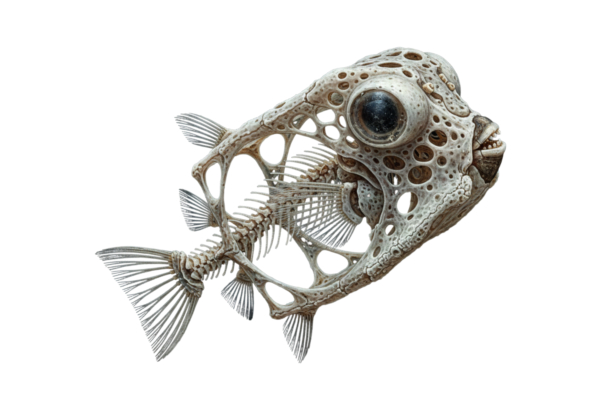
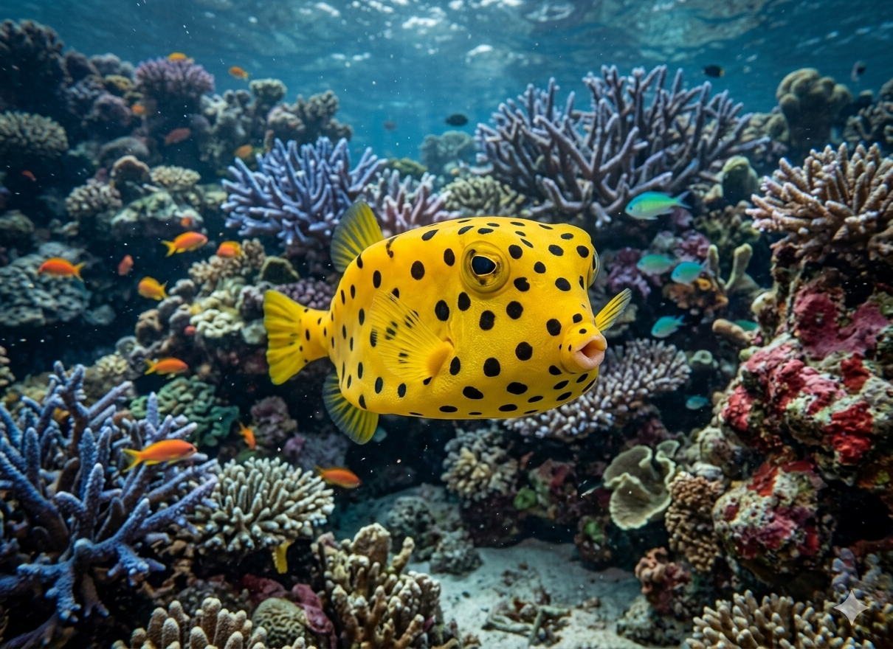
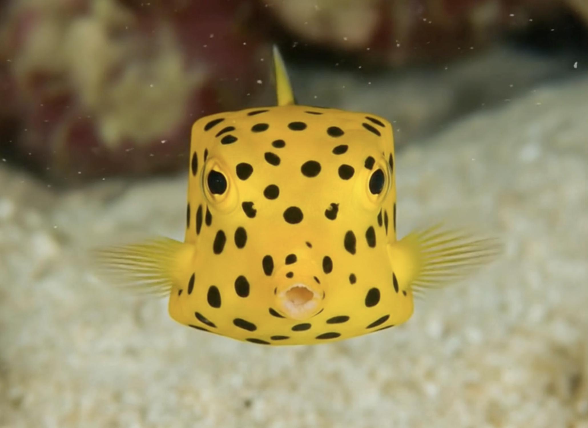

Bob, the
square swimmer

He's not round, he's not flat... He's shaped like a box, because he's a box fish!
Want to get to know Bob? Let's start!
Scroll to dive in
Looks clunky? Not at all! Bob's shape is an aerodynamic work of art..

His shape was even used by Mercedes in 2005 as inspiration for the Bionic Car, due to his particularly low drag coefficient (cw value = 0.06) and maneuverability.
Isn't that cool?

Wait there's more that makes Bob special!
Bob is also extremely stable thanks to his shape!

External influences have little effect on him.
Because his skeleton forms a closed protective shell made of hexagonal plates. Hard as stone, light as a feather.

But where and how does Bob live?
Bob lives alone in coral reefs, algae or seaweed beds.

He feeds on worms, tunicates, sponges, algae, and seaweed. To uncover prey hidden in the sand, it blows a jet of water onto the sand.
Now you know a lot more about Bob the boxfish.
He may not be a world champion swimmer...
...but he's one of the coolest in the ocean.
